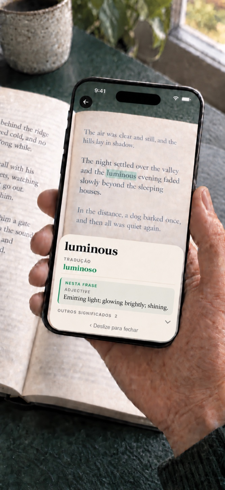

Aponte para uma palavra desconhecida.
Coloque o pequeno círculo verde sobre a palavra. Um destaque percorre o texto quando é reconhecido.
Uma companhia para livros em papel
Uma palavra desconhecida não devia interromper uma boa leitura. Aponte a câmara do telemóvel para a palavra, consulte o significado e continue a ler. Sem ter de escrever.
iPhone · iOS 17+ / Android 8.0+ · $1.99 USD

O dicionário de inglês está incluído. Descarregue outros dicionários e traduções de palavras antes de ler; os recursos instalados funcionam sem internet. Não é necessária uma conta.
Uma compra inclui todos os dicionários e pacotes de tradução de palavras disponíveis. Sem subscrição nem compras integradas.
Em telemóveis compatíveis com Android 12 ou posterior e pelo menos 8 GB de RAM, um modelo opcional no dispositivo pode escolher um significado para livros em inglês. Transfira o modelo separadamente através do Google Play. A aplicação verifica o desempenho e os recursos disponíveis antes de o ativar; os requisitos mínimos não garantem disponibilidade. A escolha aparece apenas se estiver pronta ao abrir a definição. A consulta habitual funciona sem o modelo.
As imagens e o texto reconhecido são processados no dispositivo. O Google ML Kit recolhe dados técnicos de diagnóstico e utilização. As transferências enviam informações habituais de ligação aos servidores. Se escolher a pesquisa no Google, a consulta será enviada ao navegador e ao Google e requer Internet. Consulte a política de privacidade do Android.
Requer Android 8.0 ou posterior e câmara.
Um momento de curiosidade
Sem escrever nem mudar de aplicação. Uma consulta rápida e de volta ao livro.
Coloque o pequeno círculo verde sobre a palavra. Um destaque percorre o texto quando é reconhecido.
A definição aparece. Leia-a de relance ou explore outros significados quando precisar.
Deslize a definição para a fechar e volte à frase. A câmara fica pronta para a próxima palavra.
Pensado para a sua forma de ler
Leia na língua do seu livro. Descarregue apenas os dicionários de que precisa.
iPhone: Quando um significado é confirmado para a frase, essa definição aparece primeiro.
Como é escolhido o significado ↓Os dicionários e traduções instalados funcionam sem internet.
Todos os dicionários e pacotes de tradução disponíveis estão incluídos. Sem subscrição nem compras integradas.
Um pouco mais de compreensão
Quando um significado é confirmado para a frase, a sua definição aparece primeiro. Os outros significados continuam disponíveis.
A seleção pelo contexto requer um iPhone compatível com Apple Intelligence disponível no iOS 26 ou posterior. Caso contrário, aparece o primeiro significado do dicionário.
Os plurais e as conjugações podem levar à entrada correspondente no dicionário.
Está a ler em inglês? Adicione uma tradução da palavra na sua língua ao lado da definição inglesa. Descarregue o pacote uma vez e utilize-o offline.
Os equivalentes variam consoante a palavra e a língua. São palavras individuais, não traduções de páginas inteiras.

Escolha a língua do livro
Escolha entre 24 línguas de leitura. O inglês está incluído; os outros dicionários são descarregados quando precisa. Selecione a língua do livro e toque em Começar a ler.
A ler um livro em inglês? Escolha entre 24 pacotes separados de tradução de palavras: as 23 línguas de dicionários disponíveis acima, mais grego. Traduza para inglês palavras das 23 línguas de livros suportadas além do inglês. A tradução das definições para inglês é opcional quando existem modelos de tradução compatíveis disponíveis.
26 línguas de interface. Toque na engrenagem do ecrã inicial e abra Definições → Língua da app. Por predefinição, segue a língua do telefone; se não for suportada, usa inglês. A língua do livro é independente.
O grego tem interface e traduções de palavras inglesas, mas não leitura de livros gregos. O curdo cobre kurmanji em alfabeto latino, não sorani; o malaio cobre rumi em alfabeto latino. O chinês aceita escrita simplificada e tradicional. A cobertura varia por palavra, forma e língua.
O essencial
Os dicionários e traduções instalados funcionam sem internet.
As imagens e palavras reconhecidas ficam no iPhone. Sem conta, publicidade, análise ou rastreio.
Todos os dicionários e pacotes de tradução disponíveis estão incluídos. Sem subscrição nem compras integradas.
Sim. O dicionário inglês está incluído na aplicação. Descarregue os outros dicionários e traduções enquanto tiver ligação à internet; depois, funcionam sem ligação. A consulta do catálogo requer internet.
As 24 línguas de leitura estão listadas acima. O inglês está incluído; os outros 23 dicionários são descarregados separadamente. Escolha a língua do livro antes de ler. O chinês aceita ambas as escritas; o curdo cobre kurmanji latino e o malaio, rumi.
As traduções de palavras aparecem ao lado das definições inglesas. No iOS 18 ou posterior, pode também escolher definições traduzidas para livros ingleses em 19 línguas compatíveis após descarregar os ficheiros necessários. Traduza para inglês palavras das 23 línguas de livros suportadas além do inglês. A tradução das definições para inglês é opcional quando existem modelos de tradução compatíveis disponíveis.
Quando um significado é confirmado para a frase, a sua definição aparece primeiro. Os outros significados continuam disponíveis. A seleção pelo contexto requer um iPhone compatível com Apple Intelligence disponível no iOS 26 ou posterior. Caso contrário, aparece o primeiro significado do dicionário.
O Booktionary requer um iPhone com iOS 17 ou posterior. Uma boa iluminação facilita o reconhecimento do texto.
Não. As imagens, as palavras reconhecidas e as consultas ficam no dispositivo. Sem conta, publicidade ou análises. As transferências contactam o servidor, que pode receber o seu endereço IP.
Uma boa iluminação ajuda. Aproxime o telemóvel se o texto não for reconhecido e escolha a língua do livro antes de começar. Para verificar a utilização offline, instale os recursos e consulte uma palavra em modo de voo.
Precisa de ajuda? Escreva para fredddv@hotmail.com com o modelo do iPhone, a versão do iOS, a língua do livro e o problema.
Para quem gosta de livros em papel
Compra única. Sem subscrição. · iPhone · iOS 17+ / Android 8.0+